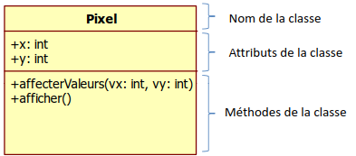

L'approche Objet
L'objectif de ce chapitre est de découvrir ce qu'est la programmation orientée objet.
a - Conception d'objet
La question est: De quoi parle t - on ?
Quelles sont les entités qui interviennent dans mon problème ?
exemple :
modéliser un logiciel de trafic routier
les entités sont :
- les feux tricolores
- les carrefours
- les véhicules
- les agents de la circulation.
Lorsqu'un feu tricolore passe au vert il envoie cette connaissance (= ce message) à l'agent posté à ce carrefour. L'agent prend une décision et en informe (envoi de messages) les chauffeurs des véhicules.
Définition
un objet se compose d'informations et d'actions. Les actions utilisent (et parfois modifient) les informations de l'objet.
- L'ensemble des informations d'un objet donné est appelée son état.
- L'ensemble des actions applicables à un objet représente son comportement.
Remarque
Les actions associées à un objet s'expriment généralement sous la forme de verbes à l'infinitif (créditer, débiter).
Un objet est composé de 2 parties :
- partie interface: opérations qu'on peut faire dessus (partie publique)
- partie interne (intime): données sensibles de l'objet (partie privée) Les utilisateurs (i.e. les éléments extérieurs) de l'objet ne voient que la partie interface.
Ces entités doivent être indépendantes
b - Exemple d'objet
La renault R21 bleue immatriculée 2245 CDV 75 de mon chef de service est un objet
objet R21_de_mon_chef
genre : Renault
immatriculation : 2245 CDV 75
NbPlaces : 5
propriétaire: chef de service
s_arreter()
avancer()
fin objet
Un autre objet serait ma clio immatriculée 4357 NBG 93
objet ma_Corsa
genre : Opel
immatriculation : 4357 NBG 93
NbPlaces : 4
propriétaire: Moi - même
s_arreter()
avancer()
fin objet
Remarque
Les objets ne diffèrent que par leurs attributs (en bleu ici).
Différentes instances de la même classe :
- contiennent des attributs au valeur différente
- partagent un même comportement
c - Un objet sans classe… n’a pas de classe
Définition
Modèle décrivant le contenu et le comportement des futurs objets de la classe.
Le contenu correspond aux attributs dans lesquels sont stockées les méthodes
le comportement correspond aux méthodes (l'autre nom pour les fonctions dans les classes)
Représentation UML de la classe
Exemple de classe
la classe des véhicules, la classe des camions, des automobiles.
La classe des automobiles peut être décrite par :
classe Automobile
genre
immatriculation
NbPlaces
propriétaire
s_arreter()
avancer()
fin classe
d - Les classes et leur jardin secret
Encapsulation
L’encapsulation consiste à gérer la classe comme boite noire responsable de sa propre cohérence.
Pour y parvenir, il est possible de définir la visibilité de chacun des membres d’une classe.
Un membre peut être :
- public(+): visible par tous
- private(-): visible uniquement des membres de la classe
- protected(#) : utile lors de l’héritage
- rien : (~) visibilité par défaut, uniquement au niveau package